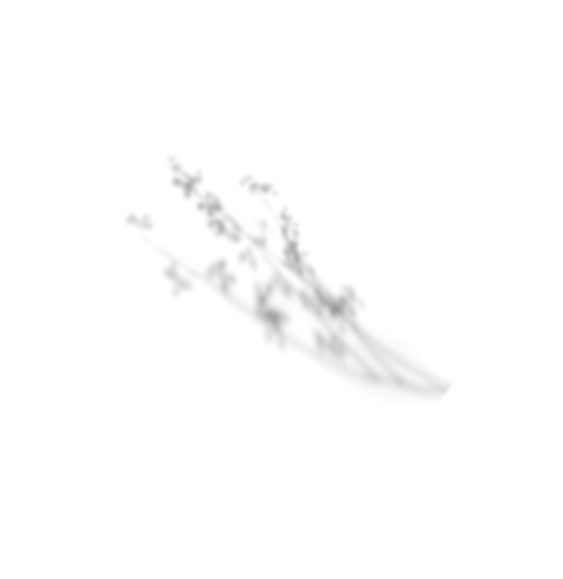
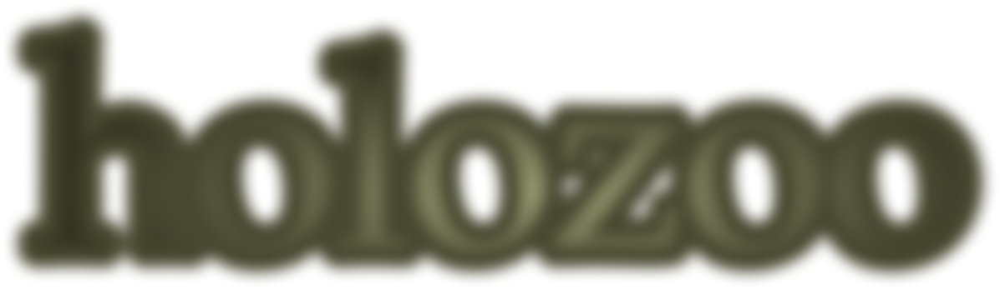

sound



Мы расскажем историю об основателе зоопарка
в честь юбилея открытия holozoo

sound

Мы расскажем историю об основателе зоопарка
в честь юбилея открытия holozoo

В самом юном возрасте Виктор Андоне увлекался
природой
и растениями, рисуя их на бумаге различными материалами,
которые
ему очень нравились.

фото 1838г.
1874 год. цитата в личном дневнике
Думая, куда поступать, Виктор принял решение
поступить
в вуз на факультет биологии и ботанки,
продолжа своё изучение
в стенах универститета.
по биологии
ботаника/история
кедр
бансай
Аристотель
лисичка
мухомор
рибосома
цитоплазма
Аристотель
Дарвин
лопух
дуб
лиственник
В своих дневниках Виктор Андоне не раз упоминал
о своей семье, описывая свою рутину
он так же запечатлевал и их будни.


1867 год. цитата в личном дневнике

Найдя место, где обитают «голографические животные»,
Виктор
полностью посвятил себя изучению феномена holozoo

Думая, куда поступать, Виктор принял решение поступить в вуз на факультет биологии и ботанки, продолжа своё изучение в стенах универститета.